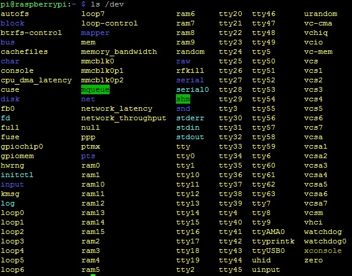
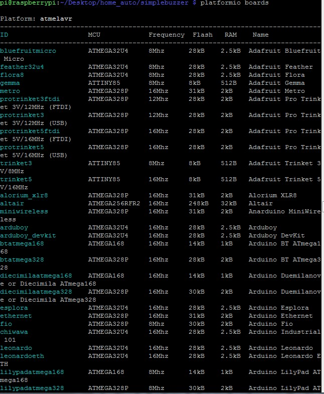

Hello and welcome to my guide! What is this about? Making your life a tad bit easier. Tired of plugging devices back and forth after a small change? Tired of latency when using the pi remotely? Tired of having to attend to a pile of devices at your workstation and filling up your desk creating a spatial chaos? Want to learn some more industrial standards and practises while making your life more convenient?
This is for you!
For all of you using a Raspberry Pi to tinker with IoT and microcontrollers and at the same time leaving the raspberry pi at the same spot and never picking it up (unless you want to make something else afterwards)
After this you will be able to :
First thing is first : Make sure you have at least a working Pi and a microcontroller. Also you will be needing a wifi dongle for your pi (or at least a spare lan cable if you want to use it less remotely) Depending on your microcontroller, you will need an additional component to test your code/sketch.


Connect your microcontroller to your Pi.
If you haven't already, set up a fresh installation of raspbian on an SD card and power up the pi. then setup your pi for wifi (optional, skip this if you are using a lan cable). Additional step, check your connected devices to your router ( by default, you can enter your router interface by surfing to 192.168.1.1 on your favourite browser. If it fails, check this and assign a permanent ip address to your pi. I recommend to change your default password.
Next up we are going to check how the PI is interacting with your usb connected microcontroller. Plug in your microcontroller into the pi, ssh into your pi and type
ls /dev The device (when plugged via USB) should show on the list as dev/ttyUSB0 or dev/ttyACM0 or similar (with other numbers) If for some reason you cannot see a difference, unplug your USB device,type
dmesg -wH
and plug it back in. See if there is any update on the text.
Setting Up Git on your Pi
Personally I use GitKraken on my machines but it is still good to know CLI commands (for situations like this for example). Install Git on your Pi by typing
sudo apt-get install git
Next you want to create a new repository on your favourite service (GitHub, GitLab etc) and then clone it somewhere on your pi. The specifics of how each service works differs slightly. As an example, check the GitLab instructions here then test that everything is working by typing
git status
Read this awesome material on Git, to help you become a Git power user!
Setup Platformio
What is Platformio? Here is what their own docs say about it :
This is cross platform code builder and library manager with platforms like Arduino or MBED support. They took care of toolchains, debuggers, frameworks that work on most popular platforms like Windows, Mac and Linux. It supports more than 200 development boards along with more than 15 development platforms and 10 frameworks.
The main feature here that helps us is that you can deploy your code remotely to your hardware package (here it is the RPi + Arduino) only with SSH and nothing else! Install it :
sudo pip install -U platformio
Then we want to initiate a platformio "project" Navigate to your repository on your Pi:
cd /directory/to/your/repo
In our case we are using an Arduino Nano Atmega328. You can find your own board by typing
platformio boards
Write down the ID of your board. Next we initialise the project for your specific board. for my nano it would be :
platformio init -b nanoatmega328
then you can notice the contents of the folder
ls -athere is a src folder and a lib folder. when you develop on your arduino IDE you have .ino sketches (or sometimes .cpp/.c and .h files) and then you have libraries that you import (for example SimpleDHT library) the first files go into this src folder, while the libraries go into the lib folder. you can now try to write a simple sketch on your main station, then push it to the repository. Then, using the SSH client, log in to your pi again, navigate to your local repository, execute
git pull
and then
platformio run -t upload
The above will try to compile your code. You can see text feedback on your console, and any errors that might come up. Should it be successful, you should already see the arduino executing the sketch you wrote before!